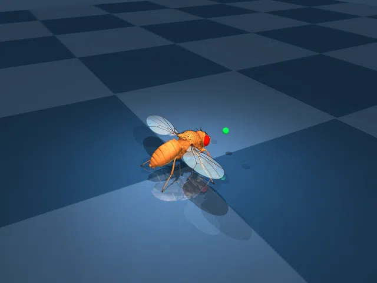

🦗 VNC → HH → Atlasov → MuJoCo
Реальный VNC коннектом (25K нейронов) управляет ходьбой мухи

▶ Play
⏸ Pause
🔄 Restart
25,531
VNC Нейронов
7.1
Скорость мм/с
2.4
BL/s (body-lengths)
✅ CPG REAL — 7 mm/s при реалистичном clip=0.005